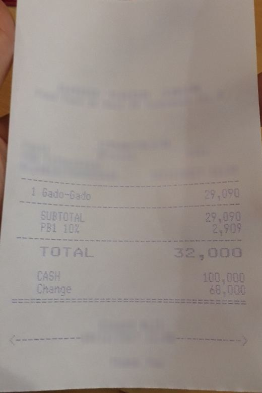

Docket
Docket reads a receipt photo and stores it as checked data. Every field gets a confidence score, and a receipt goes to a person when any field looks doubtful.
This page replays recorded results. Every number and receipt below came from an earlier model run and was saved. Nothing here calls a model. The small model is Qwen 3.5 9B on a local GPU. The Claude numbers come from saved Bedrock responses.
Four receipts
Pick one to see what Docket stored, how sure it was of each field, and where the receipt went.
Straight through, or to a person
Drag the red line. A receipt skips the person only when its least confident field clears the line. Each slip below is one of the - test receipts, judged on calibrated confidence.
Straight through
0To a person
0- Straight through
- -
- Field error among them
- -
- Receipts passed
- -
- Wrong fields passed
- -
When the photo is bad
Damage the real receipt photo the way the robustness suite did. Next to each slider is the field accuracy recorded at the nearest level the suite measured.

Is the confidence honest?
Each bar is how often fields in that confidence bin were right on the test split. A score that tells the truth puts every bar on the dashed line. Grey is the confidence the model writes down. Black is the same field after calibration on receipts it had not been scored on.
Which model reads it
Before any model call, a router looks at the photo and picks the small local model or Claude.
Check your own photo
If the photo is one of the recorded receipts, you get its saved result. For any other photo this page measures the image the way the router does and says which model it would go to. Reading the fields needs a model, and this page has none.
Your photo's route shows up here.
The 42 hand checked receipts
Claude Haiku 4.5 on the text of 42 receipts labelled by hand, replayed from saved Bedrock responses.
field accuracy